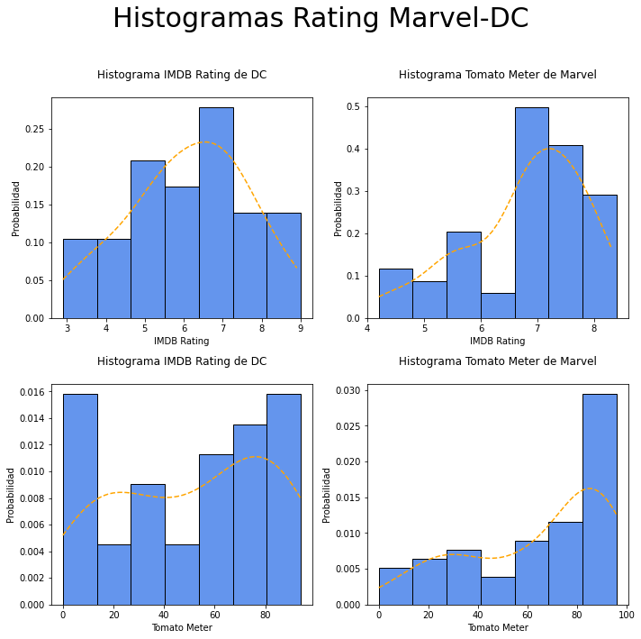

Pregunta 1
Del primer grafico se puede analizar que las películas de DC tienen mucha probabilidad de estar en un rating de entre 5 y 7 de IMDB, ya que alrededor del 25% se encuentra ahí.
A partir del segundo se puede concluir que Marvel tiene alrededor de 40% de sus películas con rating alrededor de 7 en IMDB y la mayoria de sus peliculas tiene rating mayor a 6.5.
Del tercero se puede concluir que las películas de DC están más distribuidas en cuanto a su rating en Rotten Tomatoes en comparación con IMDB, ya que ningún valor del Tomato Meter supera 10% en la probabilidad de densidad. Ademas, el Tomato Meter es más radical en cuanto al rating, ya que se nota una tendencia al 0 de muchas peliculas, o a valores altos, más que a valores medios.
Del último grafico claramente se nota una tendencia a obtener puntajes altos, por sobre 80 en el Tomato Meter, por lo que la gran mayoría de las películas de Marvel tienen puntajes altos.